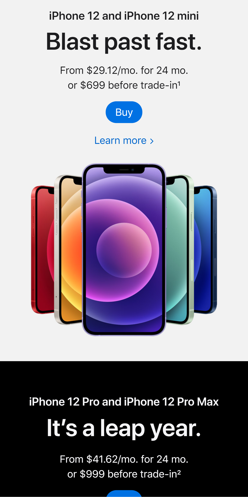

Apple
https://www.apple.com/iphone/
On this page, Apple separated their products into two categories based on price. They grouped the iPhone 12 and the iPhone 12 mini into one price range, and the iPhone 12 Pro and the iPhone 12 Pro Max into the other. They used the contrasting white and black backgrounds to help the user differentiate these two sections and price ranges. Apples use of grouping sections and adding contrasting background colors makes the page, as a whole, look more structured and minimalist while still keeping the important information.